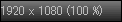
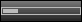
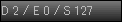
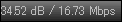
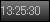
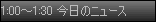
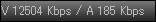

画面下に表示されるステータスバーによって、各種の情報表示と操作が行えます。
ステータスバーには以下の項目を表示することができます。
| 項目 | 表示内容 | 左クリック | 右クリック | |
|---|---|---|---|---|
| チューナー | 現在のチューナー | チューニング空間/ドライバ選択 | チューニング空間/ドライバからチャンネル選択 | |
| チャンネル | 現在のチャンネル | チャンネル選択 | サービス選択 | |
| お気に入り | お気に入りメニュー | お気に入りに追加 | ||
|  | 映像サイズ | 幅 x 高さ (倍率) | 表示倍率選択 | アスペクト比選択 |
|  | 音量 | 現在の音量 | 音量の変更 | 消音 |
| 音声 | 現在のモード | 音声切替 | 音声切替メニュー | |
| 録画 | 現在の録画状況 | 録画開始/停止 | 録画メニュー | |
| キャプチャ | キャプチャ実行 | キャプチャメニュー | ||
|  | エラー | ドロップ(D) / エラーパケット(E) / スクランブル解除漏れ(S) | リセット | |
|  | 信号レベル | 感度 / ビットレート | ||
|  | 時計 | 現在の時刻 | PC/TOT時刻の切り替え | メニュー |
|  | 番組情報 | 現在の番組の情報 | 現在/次の番組の切り替え | メニュー |
| バッファリング | BonDriverのバッファ残量(R) / バッファ使用率(B) | バッファリングメニュー | ||
|  | ビットレート | 映像ビットレート(V) / 音声ビットレート(A) |
ステータスバーのチャンネル/音量/音声の各項目にフォーカスがある状態でホイールを使用すると、その項目に合わせた動作をします。
ステータスバーの項目の順序、表示/非表示、大きさは設定で変更することができます。